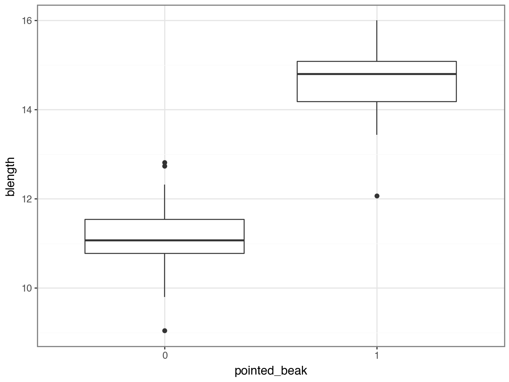

6 Binary response
Questions
- How do we analyse data with a binary outcome?
- Can we test if our model is any good?
- Be able to perform a logistic regression with a binary outcome
- Predict outcomes of new data, based on a defined model
Objectives
- Be able to analyse binary outcome data
- Understand different methods of testing model fit
- Be able to make model predictions
6.1 Libraries and functions
6.1.1 Libraries
6.1.2 Functions
6.1.3 Libraries
# A Python data analysis and manipulation tool
import pandas as pd
# Python equivalent of `ggplot2`
from plotnine import *
# Statistical models, conducting tests and statistical data exploration
import statsmodels.api as sm
# Convenience interface for specifying models using formula strings and DataFrames
import statsmodels.formula.api as smf6.1.4 Functions
The example in this section uses the following data set:
data/diabetes.csv
This is a data set comprising 768 observations of three variables (one dependent and two predictor variables). This records the results of a diabetes test result as a binary variable (1 is a positive result, 0 is a negative result), along with the result of a glucose test and the diastolic blood pressure for each of 767 women. The variables are called test_result, glucose and diastolic.
6.2 Load and visualise the data
First we load the data, then we visualise it.
diabetes <- read_csv("data/diabetes.csv")diabetes_py = pd.read_csv("data/diabetes.csv")Looking at the data, we can see that the test_result column contains zeros and ones. These are yes/no test result outcomes and not actually numeric representations.
We’ll have to deal with this soon. For now, we can plot the data, by outcome:
diabetes %>%
ggplot(aes(x = factor(test_result),
y = glucose)) +
geom_boxplot()
We could just give Python the test_result data directly, but then it would view the values as numeric. Which doesn’t really work, because we have two groups as such: those with a negative diabetes test result, and those with a positive one.
We can force Python to temporarily covert the data to a factor, by making the test_result column an object type. We can do this directly inside the ggplot() function.
(ggplot(diabetes_py,
aes(x = diabetes_py.test_result.astype(object),
y = "glucose")) +
geom_boxplot())
It looks as though the patients with a positive diabetes test have slightly higher glucose levels than those with a negative diabetes test.
We can visualise that differently by plotting all the data points as a classic binary response plot:
diabetes %>%
ggplot(aes(x = glucose, y = test_result)) +
geom_point()
(ggplot(diabetes_py,
aes(x = "glucose",
y = "test_result")) +
geom_point())
This presents us with a bit of an issue. We could fit a linear regression model to these data, although we already know that this is a bad idea…
diabetes %>%
ggplot(aes(x = glucose, y = test_result)) +
geom_point() +
geom_smooth(method = "lm")
(ggplot(diabetes_py,
aes(x = "glucose",
y = "test_result")) +
geom_point() +
geom_smooth(method = "lm",
colour = "blue"))
Of course this is rubbish - we can’t have test results outside the range of [0, 1].
But for the sake of exploration, let’s look at the assumptions:

First, we create a linear model:
# create a linear model
model = smf.ols(formula= "test_result ~ glucose",
data = diabetes_py)
# and get the fitted parameters of the model
lm_dia_py = model.fit()Next, we can create the diagnostic plots:
dgplots(lm_dia_py)
They’re pretty extremely bad.
- The response is not linear (Residual Plot, binary response plot, common sense).
- The residuals are not distributed normally (Q-Q Plot)
- The variance is not homogeneous across the predicted values (Location-Scale Plot)
- But - there is always a silver lining - we don’t have influential data points.
Another way of viewing the residuals (apart from the Q-Q plot) is as a dot-plot. In R, the ggdist and distributional packages are extremely useful for this kind of stuff.
What I’m doing here is:
- define the model
- create a normal distribution with \(\mu = 0\) and \(\sigma = 0.415\) (I’ve extracted the \(\sigma\) value from the residuals with
rstatix::get_summary_stats()) - plot the residuals
diabetes %>%
lm(test_result ~ glucose, data = .) %>%
resid() %>%
as_tibble() %>%
# rstatix::get_summary_stats()
ggplot(aes(x = value)) +
stat_dist_halfeye(aes(dist = dist_normal(0, 0.415)),
orientation = "horizontal") +
stat_dotsinterval(aes(x = value),
orientation = "horizontal",
fill = "firebrick", scale = 1) +
labs(title = "Linear model (diabetes)", y = "probability", x = NULL)
This again shows us that the residuals are really not normally distributed. If they were, then they would overlap much more closely with the distribution (in grey).
6.3 Creating a suitable model
So far we’ve established that using a simple linear model to describe a potential relationship between glucose levels and the probability of getting a positive test result is not a good idea. So, what can we do?
One of the ways we can deal with binary outcome data is by performing a logistic regression. Instead of fitting a straight line to our data, and performing a regression on that, we fit a line that has an S shape. This avoids the model making predictions outside the \([0, 1]\) range.
There are many mathematical functions that produce S-shaped graphs. The logistic function is one of them and well-suited to these kind of data.
In the most simple form a logistic function is written like this:
\(Y = \frac{\exp(X)}{1 + \exp(X)}\)
In mathematics, \(\rm e\) represents a constant of around 2.718. Another notation is \(\exp\), which is often used when notations become a bit cumbersome. Here, I exclusively use the \(\exp\) notation for consistency.
We can generalise this, by writing it as follows:
\(Y = \frac{\exp(X)}{1 + \exp(\beta_0 + \beta_1X)}\)
Note that the \(\beta_0 + \beta_1X\) part is identical to the formula of a straight line. We’ve come across this before when we were doing simple linear regression!
The rest of the function is what makes the straight line curve into its characteristic S shape. The middle of the S (where \(Y = 0.5\)) occurs when \(X = \frac{-a}{b}\).
The shape of the logistic function is hugely influenced by the different parameters, in particular \(\beta_1\). The plots below show different situations, where \(\beta_0 = 0\) in all cases, but \(\beta_1\) varies.
The first plot shows the logistic function in its simplest form, with the others showing the effect of varying \(\beta_1\).

- when \(\beta_1 = 1\), this gives the simplest logistic function
- when \(\beta_1 = 0\) gives a horizontal line, with \(Y = \frac{\exp(\beta_0)}{1+\exp(\beta_0)}\)
- when \(\beta_1\) is negative flips the curve around, so it slopes down
- when \(\beta_1\) is very large then the curve becomes extremely steep
We can fit such an S-shaped curve to our diabetes data set, by creating a generalised linear model.
In R we have a few options to do this, and by far the most familiar function would be glm(). Here we save the model in an object called glm_dia:
glm_dia <- glm(test_result ~ glucose,
family = binomial,
data = diabetes)The format of this function is similar to that used by the lm() function for linear models. The important difference is that we must specify the family of error distribution to use. For logistic regression we must set the family to binomial.
If you forget to set the family argument, then the glm() function will perform a standard linear model fit, identical to what the lm() function would do.
# create a linear model
model = smf.glm(formula= "test_result ~ glucose",
family = sm.families.Binomial(),
data = diabetes_py)
# and get the fitted parameters of the model
glm_dia_py = model.fit()6.4 Model output
That’s the easy part done! The trickier part is interpreting the output. First of all, we’ll get some summary information.
summary(glm_dia)
Call:
glm(formula = test_result ~ glucose, family = binomial, data = diabetes)
Deviance Residuals:
Min 1Q Median 3Q Max
-2.1353 -0.7819 -0.5189 0.8269 2.2832
Coefficients:
Estimate Std. Error z value Pr(>|z|)
(Intercept) -5.611732 0.442289 -12.69 <2e-16 ***
glucose 0.039510 0.003398 11.63 <2e-16 ***
---
Signif. codes: 0 '***' 0.001 '**' 0.01 '*' 0.05 '.' 0.1 ' ' 1
(Dispersion parameter for binomial family taken to be 1)
Null deviance: 936.6 on 727 degrees of freedom
Residual deviance: 752.2 on 726 degrees of freedom
AIC: 756.2
Number of Fisher Scoring iterations: 4print(glm_dia_py.summary()) Generalized Linear Model Regression Results
==============================================================================
Dep. Variable: test_result No. Observations: 728
Model: GLM Df Residuals: 726
Model Family: Binomial Df Model: 1
Link Function: Logit Scale: 1.0000
Method: IRLS Log-Likelihood: -376.10
Date: Mon, 06 Mar 2023 Deviance: 752.20
Time: 08:43:52 Pearson chi2: 713.
No. Iterations: 4 Pseudo R-squ. (CS): 0.2238
Covariance Type: nonrobust
==============================================================================
coef std err z P>|z| [0.025 0.975]
------------------------------------------------------------------------------
Intercept -5.6117 0.442 -12.688 0.000 -6.479 -4.745
glucose 0.0395 0.003 11.628 0.000 0.033 0.046
==============================================================================There’s a lot to unpack here so take a deep breath (or make sure you have a coffee) before continuing…
- The first lines just confirm which model we’ve been fitting (trust me, this can be useful when you’re in the middle of a load of analysis and you’ve lost track of what the hell is going on!)
- The next block is called Deviance Residuals. This isn’t particularly useful, but just so you know: for linear models the residuals were calculated for each data point and then squared and added up to get the
SS(sum of squares), which is used to fit the model. For generalised linear models we don’t use SS to fit the model and instead we use an entirely different method called maximum likelihood. This fitting procedure generates a different quantity, called Deviance, which is the analogue of SS. A deviance of zero indicates the best model we could hope for and bigger values indicate a model that doesn’t fit quite as well. The deviance residuals are then values associated with each data point, that when squared and summed give the deviance for the model (an exact analogy to normal residuals). You’re unlikely to ever need to know this, but I had some time on my hands and decided to share this little nugget with you :-) - The
Coefficientsblock is next. The main numbers to extract from the output are the two numbers underneathEstimate.Std:
(Intercept) -5.611732
glucose 0.039510The top part of table contains a lot of information about the model we’ve just created at a high level. The left-hand column just tells us a lot of stuff that we really don’t care about like:
- the name of the dependent variable (which we already know because we entered it ourselves!);
- the type of model (a binomial glm which we again already knew).
- the type of link function (in this case a logit link – we don’t really care about this either).
- Generalized Linear Models don’t have exact analytical methods for fitting to the data and they all use some form of iterative algorithm. In this case we used the standard method called Iteratively Reweighted Least Squares (IRLS),
- and the model took 4 iterations to converge.
- This left-hand column also helpfully tells us the time and date when the analysis was carried out – how helpful!
The right-hand column starts to give us some more useful summary statistics that we’ll end up using. In particular we care about the Deviance value. For linear models the residuals were calculated for each data point and then squared and added up to get the SS (sum of squares), which is used to fit the model. For generalised linear models we don’t use SS to fit the model and instead we use an entirely different method called maximum likelihood. This fitting procedure generates a different quantity, called Deviance, which is the analogue of SS. A deviance of zero indicates the best model we could hope for (basically that the model completely matches the data) and bigger values indicate a model that doesn’t fit quite as well. We’ll also need the Df residuals value here (degrees of freedom) for some later calculations.
Right at the bottom is a table showing the model coefficients. The main numbers to extract from the output are the two numbers in the coef column:
======================
coef
----------------------
Intercept -5.6117
glucose 0.0395
======================These are the coefficients of the logistic model equation and need to be placed in the correct equation if we want to be able to actually calculate the probability of having a positive diabetes test for a given glucose level.
The p values (Pr(>|z|) at the end of each coefficient row merely show whether that particular coefficient is significantly different from zero. This is similar to the p-values obtained in the summary output of a linear model, and as before, for continuous predictors in simple models these p-values can be used to decide whether that predictor is important (so in this case glucose appears to be significant). However, these p-values aren’t great when we have multiple predictor variables, or when we have categorical predictors with multiple levels (since the output will give us a p-value for each level rather than for the predictor as a whole).
We can use the coefficients to actually calculate the probability of having a positive diabetes test for a given glucose level:
\[ P(positive \ test\ result) = \frac{\exp(-5.61 + 0.04 \times glucose)}{1 + \exp(-5.61 + 0.04 \times glucose)} \]
We started with:
Our linear predictor equation \[logit(p) = \beta_0 + \beta_1 x_1 + ... + \beta_p x_p\]
and link function \[logit(p) = log(\frac{p}{1 - p})\]
Our coefficients are as follows:
| coefficient | value |
|---|---|
| \(\beta_0\) | -5.6117317 |
| \(\beta_1\) | 0.0395101 |
Which means that we can write the linear predictor equation as follows:
\[logit(p) = -5.61 + 0.04 \times glucose\] We still have to take into account our link function. Combining the two equations gives us:
\[log(\frac{p}{1 - p}) = -5.61 + 0.04 \times glucose\]
To get our \(p\) (the probability of a person having a positive diabetes test result), we need to exponentiate our equation:
\[\frac{p}{1 - p} = \exp{(-5.61 + 0.04 \times glucose)}\]
leading to…
\[p = \frac{\exp{(-5.61 + 0.04 \times glucose)}}{1 + \exp{(-5.61 + 0.04 \times glucose)}}\]
- The next line tells us that the dispersion parameter was assumed to be 1 for this binomial model. Dispersion is a property that says whether the data were more or less spread out around the logistic curve than we would expect. A dispersion parameter of 1 says that the data are spread out exactly as we would expect. Greater than 1 is called over-dispersion and less than 1 is called under-dispersion. Here this line is saying that when we fitted this model, we were assuming that the dispersion of the data was exactly 1. For binary data, like we have here, the data cannot be over or under-dispersed but this is something that we’ll need to check for other sorts of glms.
The last three lines relate to quantities called deviance and AIC (Akaike Information Criterion).
As we said just above, the deviance values are the equivalent of Sums of Squares values in linear models (and are a product of the technique used to fit the curve to the data). They can be used as a metric of goodness of fit for the model, with a deviance of 0 indicating a perfect fitting model. The deviance for the null model (i.e. the model without any predictors, basically saying that the probability of getting a positive diabetes score is constant and doesn’t depend on glucose level) is given by the first line and the deviance for the actual model is given by the residual deviance line. We will see how we can use the deviance to do two things.
- to check of whether the model is actually any good (i.e. does it in any way look like it’s close to the data). This is akin to what we were doing with \(R^2\) values in linear models.
- to check if the model we’ve specified is better than the null model.
It’s important to realise that these two things can be independent of each other; we can have a model that is significantly better than a null model whilst still being rubbish overall (the null model will have been even more rubbish in comparison), and we can have a model that is brilliant yet still not be better than the null model (in this case the null model was already brilliant).
As we found in the model comparisons practical, the AIC value is meaningless by itself, but it will allow us to compare this model to another model with different terms (with the model with the smaller AIC value being the better fitting model).
There are some additional parameters in the right-hand column, but we’ll first focus on how we can assess significance.
6.5 Assessing significance
6.6 Exercise
6.7 Key points
- We use a logistic regression to model a binary response
- We can feed new observations into the model and get probabilities for the outcome